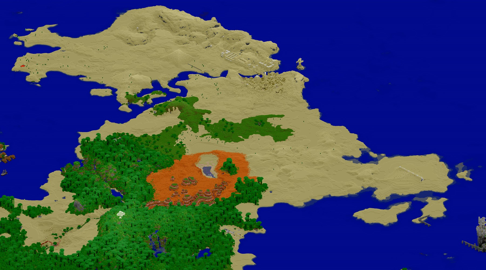
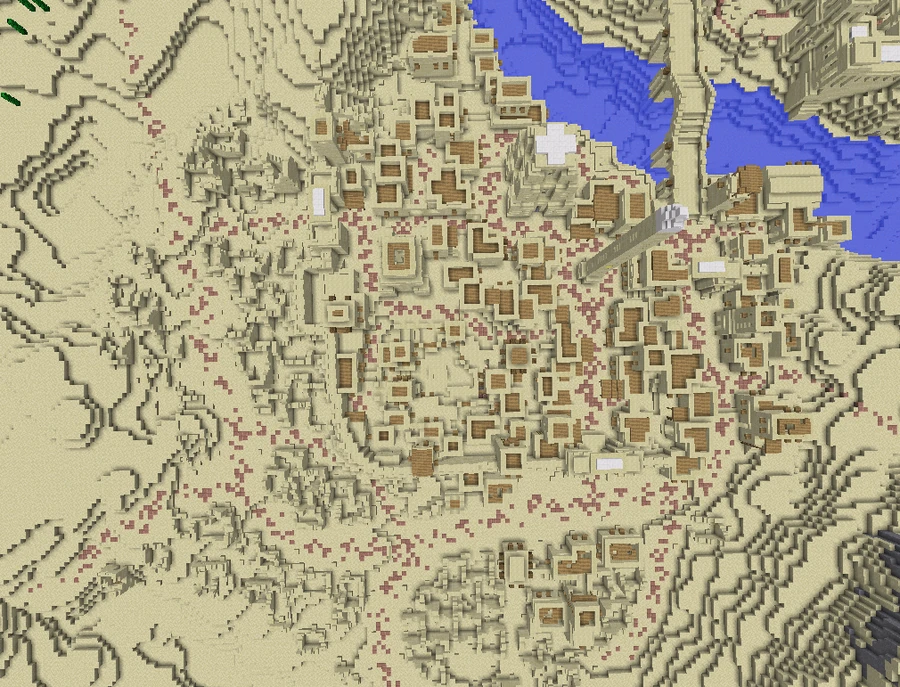
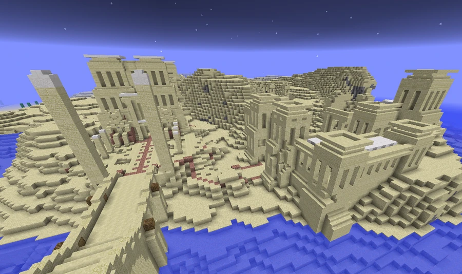
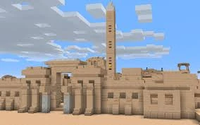

Egyptian Civilization of the Desert
−3115, 84, 2348
In the western part of the continent, a small sandy settlement stands beside a monumental complex with a temple, pyramids and burial galleries.


Settlement and monuments
The Egyptian ruins lie in the western part of the continent, described by the community survey as northwest of Broville. In the isometric view, a canal separates the houses from the monumental complex. Courtyards and smaller structures provide a sense of scale beside the temple and pyramids. The point −3115, 84, 2348 guides arrivals; the reference −3140, 70, 2300 identifies the region more broadly.
The settlement is small, and its chests are described as modest, without particularly valuable objects. The temple and pyramid contain the most notable finds. The temple, a large structure, includes a shrine with a chest beneath it. Other corners of the region also contain chests of ordinary items, interesting mainly for the exploration of the buildings. An image of ruins is accompanied by the line “Look on my works, ye Mighty, and despair!”, without providing further local history.
Galleries and burial remains
The pyramid contains galleries with different entrances. One connects the room containing the Stick of xXAnubizXx and gold with the sarcophagus chamber, where the skull, bones and wrappings of xXAnubizXx are mentioned. Another begins outside and reaches a large duck figure called Quack of the Cavenant. Access and the distribution of finds are covered in The Pyramid Galleries.
The community account presents xXAnubizXx as the ruler and places his ashes in the pyramid. The named objects support a funerary association, but do not by themselves reconstruct his rule or the settlement’s history.
Unresolved attributions
The Museum of Natural History holds organs attributed to Brotemphotep at −585, 49, 1639. An accessory bearing the pharaoh’s name is at −12, 84, 2766, far from this complex. The objects thus preserve two names associated with Broville’s Egypt without clarifying their relationship or when the settlement was abandoned. It also remains unclear whether the excavation mentioned by Garlick took place here.
Gallery









See also
Sources and references
- v11.4.4 maps, signs, books and items World records
- Ancient Egyptian Civilization · Broville Wiki Community archive
- Final Notes — Brian Garlick World book
- Broville v11 isometric map · desert view Cartography
- Broville Document Atlas · Ancient peoples Project inventory
Text adapted and expanded from Ancient Egyptian Civilization (contributors and history, revision 5072); Desert City Ruins (contributors and history, revision 5008). Adapted text is available under CC BY-SA 3.0.